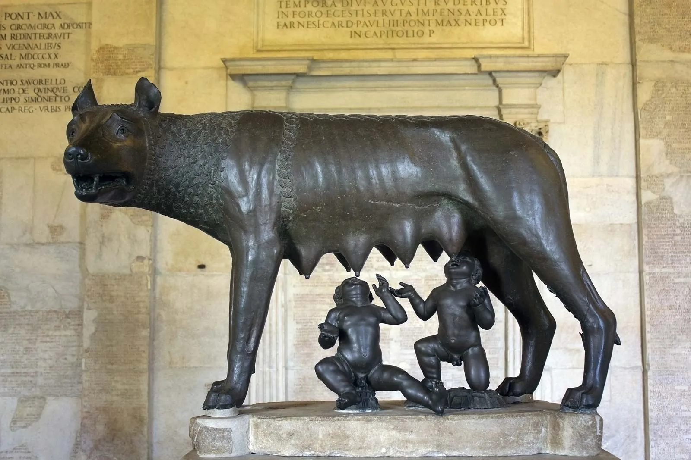
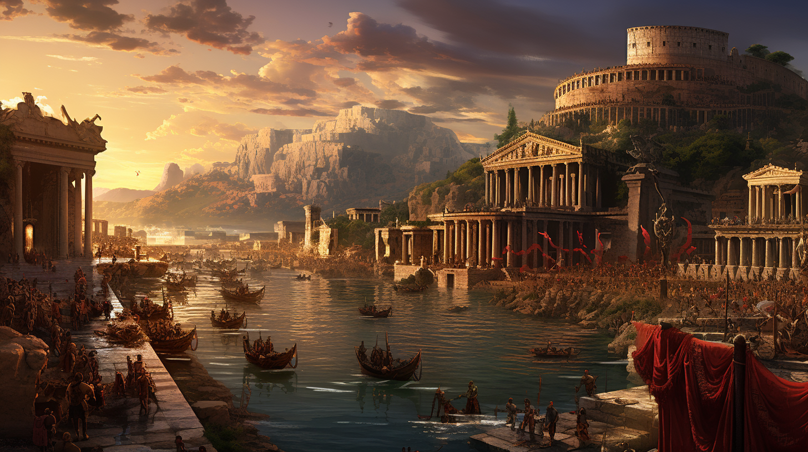
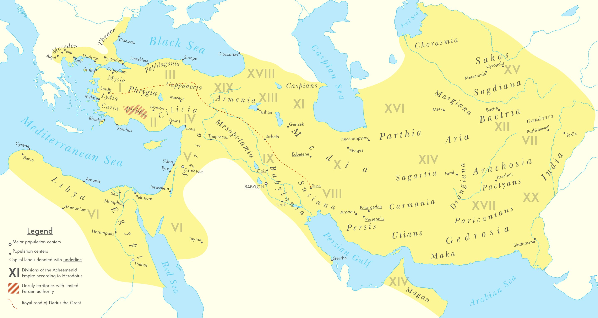

Why History?
History isn't just dusty dates! It's a thrilling detective story, explaining how our world became what it is. Imagine unraveling the puzzles:
- Why is the government structured this way? History reveals past struggles and triumphs that shaped our political systems.
- How did we get these amazing gadgets? It's a journey of scientific discoveries and inventions that changed everything.
- What sparked those social movements we hear about? History shows how societies have grappled with inequality and change.
History isn't just about the past; it helps us understand the present. It offers valuable lessons about human behavior and the consequences of decisions. By learning from the past, we can make better choices for the future. Plus, it's full of fascinating stories, inspiring figures, and incredible feats!
How it begins?
Who? When? Why?
Notable Figures
When by who?
The Peaks
When by who? How?
Roman Empire
Rome wasn't built in a day, but its empire sure conquered one! From a humble Italian city-state, they brawled their way to a vast empire, leaving behind epic architecture, fierce gladiatorial battles, and a surprising amount of peace (for the time!). Their reign roared for centuries, but even empires can't live forever.
Romulus and Remus
In Roman mythology, Romulus and Remus are twin brothers whose story tells of the events that led to the founding of the city of Rome and the Roman Kingdom by Romulus, following his fratricide of Remus.
The Roman Scenery
Show drafts Dusty roads snaked through rolling green hills dotted with vineyards and olive groves. Whitewashed villas peeked out from the slopes, while grand temples dominated cityscapes. Bustling markets filled the air with the clamor of merchants and the clatter of chariots. Beyond the urban sprawl, rugged mountains offered a dramatic backdrop to this ever-expanding Roman world.
The Roman Army
The Roman army, Rome's conquering force, was a disciplined machine. Citizen-soldiers formed legions, flexible units that shifted between defense and offense. Well-equipped and ruthless, they were backed by auxiliaries and supported by impressive logistics. Their success came from a blend of muscle, strategy, and unwavering loyalty.
.jpg)
Most Notable Roman Figures
.jpg)
Roman Empire Biggest Contributors
Marcus Aurelius
a philosopher-king and the last of the "Five Good Emperors" of Rome. Facing Challenges: Throughout his reign, Marcus Aurelius faced numerous challenges, including wars, plagues, and natural disasters. He used Stoicism to maintain his composure, make difficult decisions, and focus on what he could control. Duty over Desire: As emperor, he felt a deep sense of duty to his people and the empire. Stoicism helped him prioritize his responsibilities over personal desires or comfort.
Julius Caesar
Julius Caesar was a towering figure in Roman history, remembered for his accomplishments as a general, statesman, and reformer.He conquered Gaul (modern-day France). This doubled the size of the Roman Republic and brought immense wealth and resources to Rome.
Biggest Victory against Gaul: THE BATTLE OF ALESIA
Roman Army: Led by Julius Caesar, the Roman army likely numbered around 60,000 soldiers. They were known for their discipline, strong tactics, and advanced engineering skills.
Gauls: A large Gallic army, estimated at over 250,000 warriors, united under the leadership of Vercingetorix, chieftain of the Arverni tribe. They relied on superior numbers and hoped to overwhelm the Romans.
The battle resulted in a crushing Roman victory. The Gauls inside Alesia were forced to surrender due to starvation, while the relief force was also defeated. This effectively ended major organized Gallic resistance to Roman rule.
Augustus Caesar
Augustus emerged victorious from a series of brutal civil wars, bringing much-needed stability to the Roman Republic. Augustus ushered in an era of relative peace and prosperity known as the Pax Romana. This period lasted for over two centuries and allowed for economic growth, cultural flourishing, and territorial expansion.
Augustus Caesar's contributions went beyond military conquests. He was a shrewd politician, a patron of the arts, and a leader who ushered in a golden age for Rome.
Imagine Rome, a rising power in Italy, flexing its military muscle and expanding its reach. As it casts its ambitious gaze across the Mediterranean Sea, it encounters a formidable rival:
Introducing Ancient Carthage
Ancient Carthage
Powerful Carthage, a Phoenician trading giant, ruled the Mediterranean waves for centuries. Rome's biggest rival, it fell after a bitter struggle, leaving behind a legacy of commerce and a cautionary tale for empires.
Founding and Early History
Carthage was founded by the Phoenicians, a seafaring people from the eastern Mediterranean, around 814 BCE. It quickly grew into a major trading hub due to its strategic location, situated on a peninsula with excellent harbors.

Most Notable Carthaginian Figure
Hannibal Barca
A legend was born.This wasn't a legend of divine birth or mythical quests, but of cunning strategy and unwavering resolve. This was Hannibal Barca, a name that would echo through history as a testament to human ambition and the terrifying brilliance of a military mastermind.

Hannibal Barca, a Carthaginian military genius, revolutionized warfare with innovative tactics and strategic brilliance. His daring invasion of Rome via the Alps, coupled with victories like Cannae, showcased Carthage's military might. Hannibal's legacy endures as a symbol of Carthaginian power, innovation, and resilience against the Roman hegemony.
The Most Prominent Battle, During the Second Punic Wars. Introducing THE BATTLE OF CANNAE
- The Battle of Canae
- The Second Punic War
.png)
.jpg){kind=link}
{kind=link}
{kind=link}
{kind=link}
{kind=link}
Persian Empire
The Persian Empire, also known as the Achaemenid Empire, stands out for its vast size, cultural diversity, and enduring influence on history. It was one of the world's first truly multicultural empires, encompassing numerous ethnicities, languages, and religions. Under rulers like Cyrus the Great and Darius the Great, Persia achieved remarkable feats of administration, infrastructure, and military conquest. Its famous royal road network facilitated communication and trade across the empire, while its administrative innovations, such as standardized coinage and bureaucratic systems, laid the groundwork for future civilizations. The Persian Empire's cultural legacy is profound, influencing art, architecture, and governance across the ancient world.
The Biggest Contributors Toward Persian Empire
.jpg)
Cyrus The Great (600 BC - 530 BC)
Cyrus wasn't born into a position of ultimate power. He hailed from a line of Persian nobility, but his rise to the throne was fueled by ambition and strategic brilliance. He united various Persian tribes under his banner, eventually overthrowing the Median Empire and laying the foundation for what would become the mighty Achaemenid Empire – one of the largest empires the world had ever seen.
Cyrus embraced diversity. He allowed conquered populations to maintain their own religions and customs, fostering a sense of unity within his vast empire.
Darius The Great (522 BC - 486 BC)
Darius the Great, a towering figure of ancient Persia, ascended to the throne amidst turmoil and upheaval, yet his reign marked a golden age of prosperity, innovation, and cultural flourishing. Renowned for his administrative genius, Darius revolutionized governance, implementing a vast system of roads, standardized coinage, and bureaucratic institutions that facilitated the empire's cohesion and expansion. His benevolent rule embraced diversity, fostering tolerance and religious freedom across his vast realm. Darius' enduring legacy endures as a testament to the power of enlightened leadership and the enduring impact of ancient Persia on the course of history.
Xerxes (486 BC - 465 BC )
Xerxes, the son of Darius the Great, emerged as a formidable ruler in ancient Persia during a time of both grandeur and challenge. His reign, characterized by ambition and military prowess, witnessed the zenith of Persian power and the infamous invasion of Greece. Xerxes' leadership, marked by grand architectural projects and ambitious conquests, left an indelible mark on the ancient world, shaping the course of history for centuries to come.
